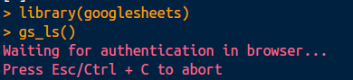
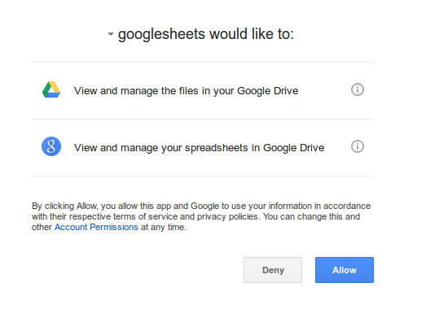
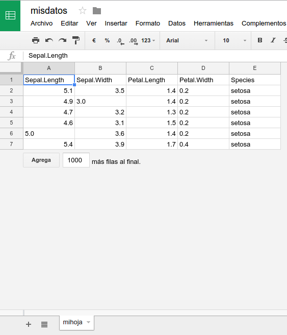
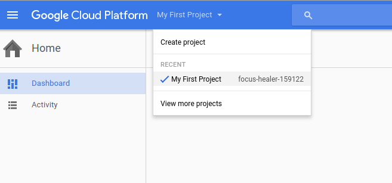

5.1 Importación de datos
Esta sección resume algunas de las funciones existentes para importar datos de distintos formatos a R. En la figura 5.2 podemos ver la etapa del análisis de datos correspondiente.
Figura 5.2: Importación en el análisis de datos (Grolemund and Wickham 2016, Introducción).
Para aplicar las herramientas de R a nuestro trabajo, es necesario poder importar nuestros datos a R. R tiene conectores ya implementados para casi cualquier tipo y formato de datos. Entre los más comunes están8:
| Formato | Lectura | Escritura |
|---|---|---|
| rds | base::readRDS | base::saveRDS |
| separado por * | utils::read.table; readr::read_delim | utils::write.table; readr::write_delim |
| csv | utils::read.csv; readr::read_csv | utils::write.csv; readr::write_csv |
| Microsoft Excel | readxl::read_excel | xlsx::write.xlsx |
| dbf | foreign::read.dbf | foreign::write.dbf |
| IBM SPSS | haven::read_sav | haven::write_sav |
| Stata | haven::read_dta | foreign::write.dta |
| SAS | haven::read_sas | haven::write_sas |
| Google spreadsheet | googlesheets::gs_read | googlesheets::gs_new |
| Google bigquery | bigrquery::query_exec | |
| Heroku Postgres | sql2df | df2sql |
| rdata | base::load | base::save |
Los paquetes utilizados son (corre estos comandos en la consola):
library(foreign)
library(haven)
library(readr)
library(readxl)
library(xlsx)
library(googlesheets)
library(bigrquery)Importancia de rutas relativas
Para leer un archivo, recordemos el comando getwd() para encontrar la carpeta a la cual R esta dirigido en este momento. Una buena practica es considerar el directorio de trabajo como el lugar en donde esta guardado el archivo o script en el que se trabaja y “moverse” desde ahí hasta el archivo que se quiere leer.
Ya sea en escritura o en lectura, R buscará a partir del directorio de trabajo (el que se despliega con getwd()) para buscar a partir de ahí el archivo por leer o para guardar el que se escribirá si se usan rutas relativas.
En caso de usar rutas absolutas (a pesar de que esto no es una buena práctica) se hará lectura o escritura del archivo en el lugar especificado.
Ejercicios
R tiene conexión con muchos de los formatos en los que se encuentran los datos. Veremos algunos de los mas relevantes.
El código en cada uno de los chunks (un chunk es el pedazo del documento en donde hay código de R) está hecho para que puedas correrlo en la consola (excepto cuando dice explícitamente do not run (leyenda comúnmente encontrada en los ejemplos de la documentación de las funciones. Con esto entenderás mejor el concepto de rutas relativas.
5.1.1 rds
La extensión rds es de las más comúnmente utilizada en R, por ejemplo, para guardar los datos para un paquete. Las funciones pertenecen al base (R Core Team 2016b). Permiten guardar un solo objeto de R a un archivo y recuperarlo.
Para escribirlos
# Creamos un dataframe llamado misdatos
misdatos <- iris
# Los guardamos en comprimido
saveRDS(misdatos, file = "misdatos.rds", ascii = FALSE, version = NULL,
compress = TRUE, refhook = NULL)Nota como si usas el comando getwd() y después vas a la ruta indicada por medio del explorador de archivos, verás en esa carpeta el archivo misdatos.rds.
Para leerlos usamos la ruta relativa. Dado que los guardamos en el directorio de trabajo actual (Recuerda, se puede cambiar con el comando setwd) entonces simplemente los llamamos:
misdatos <- readRDS("misdatos.rds")
# Los borramos
file.remove("misdatos.rds")5.1.2 separado por *
Con esto nos referimos a la colección de archivos en texto plano, es decir, .txt, .tsv, .psv, etcétera.
Para escribirlos el mas común es write.table del paquete utils (R Core Team 2016c)
# Do not run
write.table(misdatos, file = "~/misdatos.<extension>", append = FALSE
, quote = TRUE, sep = " ", eol = "\n", na = "NA", dec = "."
, row.names = TRUE, col.names = TRUE
, qmethod = c("escape", "double"), fileEncoding = "")En el paquete readr se implementa también write_delim
# Do not run
write_delim(misdatos, path = "~/misdatos.<extension>"
, delim = "\t", na = "NA", append = FALSE, col_names = !append)Escribamos ahora el dataframe misdatos en psv:
write_delim(misdatos, path = "misdatos.psv", delim = "|")Para leerlos read.table del paquete utils (R Core Team 2016c) nos permite especificar casi cualquier particularidad en un archivo de texto plano.
# Do not run
misdatos <- read.table("~/misdatos.<extension>", header = FALSE
, sep = "", quote = "\"'", dec = "."
, numerals = c("allow.loss", "warn.loss", "no.loss")
, row.names, col.names, as.is = !stringsAsFactors
, na.strings = "NA", colClasses = NA, nrows = -1
, skip = 0, check.names = TRUE
, fill = !blank.lines.skip, strip.white = FALSE
, blank.lines.skip = TRUE, comment.char = "#"
, allowEscapes = FALSE, flush = FALSE
, stringsAsFactors = default.stringsAsFactors()
, fileEncoding = "", encoding = "unknown", text
, skipNul = FALSE)La función read_delim del paquete readr (Wickham, Hester, and Francois 2016) lee los datos más eficientemente a un objeto de clase tibble.
# Do not run
misdatos <- read_delim(file = "~/misdatos.<extension>", delim
, quote = "\"", escape_backslash = FALSE
, escape_double = TRUE, col_names = TRUE
, col_types = NULL, locale = default_locale()
, na = c("", "NA"), quoted_na = TRUE, comment = ""
, trim_ws = FALSE, skip = 0, n_max = Inf
, guess_max = min(1000, n_max)
, progress = interactive())Leemos el archivo .psv que creamos antes:
misdatos <- read_delim(file = "misdatos.psv", delim = "|")
# Los borramos
file.remove("misdatos.psv")5.1.3 csv (archivo separado por comas)
Este es un caso particular de archivos de texto en el que se separan por comas. Como es muy utilizado, generalmente se hacen funciones donde ya se especifica el delimitador. Guardaremos el data frame misdatos en el directorio “arriba” de la ruta que se muestra usando getwd. Esto lo podemos hacer anteponiendo al nombre del archivo con ../.
Para escribirlos
# utils
write.csv(misdatos, file = "../misdatos.csv", row.names = F)
# readr
write_csv(misdatos, path = "../misdatos.csv", na = "NA", append = FALSE)Observa en el explorador de archivos en dónde es que se guardó el archivo misdatos.csv.
Para leerlos, seguimos usando rutas relativas.
# utils - como data.frame
misdatos <- read.table("../misdatos.csv", header=TRUE,
sep=",")
misdatos <- read.csv("../misdatos.csv")
# readr - como tibble
misdatos <- read_csv("../misdatos.csv")
# Lo borro
file.remove("../misdatos.csv")5.1.4 Microsoft Excel
Para escribirlos dentro del paquete xlsx usamos la función write.xlsx
misdatos <- iris
write.xlsx(misdatos, "misdatos.xlsx", row.names = F)Para leerlos dentro del paquete readxl se encuentra la función read_excel que es muy útil en este caso.
misdatos <- read_excel("misdatos.xlsx", sheet = 1, col_names = TRUE,
col_types = NULL, na = "", skip = 0)
# Lo borro
file.remove("misdatos.xlsx")5.1.5 dbf
Extensión que representa un archivo de una base de datos (database file).
Para escribirlos:
write.dbf(as.data.frame(misdatos), "misdatos.dbf")Nota cómo tuvimos que coercionar el objeto a data frame. Como en el ejemplo anterior leímos un tibble y el paquete foreign es más viejo (y no conoce los tibbles) entonces le mandamos un objeto que si conoce.
Veremos más adelante la ventaja de usar tibbles aún cuando de vez en cuando se tienen problemas de compatibilidad.
Para leerlos:
misdatos <- read.dbf("misdatos.dbf")
# Lo borro
file.remove("misdatos.dbf")5.1.6 IBM SPSS
SPSS puede guardar los datos agregando etiquetas y otros metadatos. Para evitar retrabajo, puede leerse directamente a R.
Para escribirlos
# haven
write_sav(data = misdatos, path = "misdatos.sav")Para leerlos
# haven - como tibble
misdatos <- read_sav(file = "misdatos.sav", user_na = FALSE)
# Lo borro
file.remove("misdatos.sav")5.1.7 Stata
HOME DIRECTORY
El directorio (carpeta) home es muy utilizado. Normalmente, se le denota como \(\thicksim\) y es en donde un sistema operativo guarda los archivos del usuario que se encuentra en sesión. Dependiendo del sistema operativo que utilices, encontrarás este directorio en una ruta específica.
En Microsoft Windows Vista 7, 8 y 10 lo encuentras en <root>\Users\<username>.
En Linux lo encuentras en /home/<username>.
En Mac OS X lo encuentras en /Users/<username>.
Para escribirlos en Stata primero tenemos que cambiar los nombres de las variables en el data frame pues Stata no admite puntos en los nombres:
names(misdatos) <- tolower(gsub("\\.", "_", names(misdatos)))
# foreign
write.dta(data = misdatos, file = "~/misdatos.dta", version = 12)Para leerlos
# haven - como tibble
misdatos <- read_dta(file = "~/misdatos.dta", encoding = NULL)
# Lo borramos
file.remove("~/misdatos.dta")5.1.8 SAS
Para usar el paquete haven en este caso ejemplificaremos la creación de un directorio de archivos en tu computadora desde R:
# Creamos un directorio llamado datos
dir.create("datos_sas")Observa como, en el directorio que se despliega con getwd encuentras ahora una carpeta llamada datos_sas. Creamos ahí un archivo con la función write_sas de haven. Nota que, para escribirlos, también debemos asegurarnos que los nombres de variables estén compuestos por letras, números o guiones bajos:
misdatos <- iris
names(misdatos) <- tolower(gsub("\\.", "_", names(misdatos)))
# haven
write_sas(data = misdatos, path = "datos_sas/misdatos.sas7bdat")Para leerlos, utilizamos read_sas del paquete haven:
# haven - como tibble
misdatos <- read_sas("datos_sas/misdatos.sas7bdat"
, catalog_file = NULL, encoding = NULL)Observa desde el explorador de archivos, cómo se creó el archivo dentro del directorio datos_sas/. También desde R podemos borrar el directorio:
unlink("datos_sas", recursive = T, force = FALSE)La bandera recursive le dice al sistema que borre todo lo contenido en esa carpeta.
5.1.9 Google Spreadsheet
Para hacer este ejercicio, debes tener una cuenta de gmail.
Primero, debe realizarse la autenticación. Esto lo puedes hacer en cualquier sesión interactiva utilizando alguna función del paquete googlesheets
gs_ls()En la consola de R te aparece:

Se abrirá una ventana del explorador y deberás introducir tus credenciales de tu cuenta de gmail
Después de poner tus credenciales, te aparecerá un mensaje pidiendo acceso a tus datos en drive:

Al aceptar darle acceso, recibirás un mensaje parecido a Authentication complete. Please close this page and return to R.
Ahora verás en la consola de R un listado de las google spreadsheets en tu cuenta de gmail.
Ahora, vamos a escribir una nueva hoja en tu cuenta.
gs_new("misdatos", ws_title = "mihoja", input = head(iris)
, trim = TRUE, verbose = FALSE)Si vas a tu google drive, deberás ver que se creó un nuevo elemento que se ve así:

De igual forma, puedes ahora leer los datos de cualquier google spreadsheet que tengas en tu cuenta.
misdatos <- gs_read(gs_title("misdatos"), ws = "mihoja")
# La borro
gs_delete(gs_title("misdatos"))5.1.10 Google bigquery
Google bigquery es un data warehouse que permite guardar grandes bases de datos. Al contratar el servicio, google se encarga del hardware y la infraestructura necesaria para que su procesamiento sea rápido (Platform 2016).
Para guardar tus datos en bigquery debes crear un proyecto en la consola de desarrolladores.
Existen varias bases de dato públicas disponibles. Para poder utilizarlas, necesitas tener una cuenta. Puedes empezar una prueba gratis en la página de google cloud platform. Verás una pantalla como esta:
Sigue las instrucciones y eventualmente llegarás a una pantalla como esta

Copia el identificador de tu proyecto para que puedas realizar queries (llamadas a las bases de datos).
Leemos la base de datos pública de natalidad en Estados Unidos.
project <- "focus-healer-159122" # pon tu projectID aquí
sql <- 'SELECT year, count(*) as babies, avg(mother_age) as mother_age_avg
FROM[publicdata:samples.natality]
WHERE year > 1980 and year < 2006
group by year;'
data <- query_exec(query = sql, project = project)Nota como la tabla cuenta con aproximadamente. 140 millones de registros y se obtiene el detalle en segundos.
5.1.11 Heroku Postgres
R no es un manejador de base de datos y, por ende, no es un lenguaje que permite trabajar con una gran cantidad de datos. R guarda los objetos utilizando la memoria virtual de la computadora, i.e. la RAM, misma que depende de varios elementos (incluido el sistema operativo) y que limita los datos que podrán ser procesados.
Cuando necesitamos conocer el tamaño de los datos que están en el ambiente de trabajo, puede utilizarse el paquete pryr (H. Wickham 2015a, sección “the role of physical memory”).
rm(list = ls()) # borramos los objetos del ambiente
# Cargamos datos al ambiente
flights <- read_csv("data/flights.csv")
airports <- read_csv("data/airports.csv")
planes <- read_csv("data/planes.csv")
ls() # mostramos los objetos en el ambiente
library(pryr) # Cargamos el paquete pryr
mem_used() # memoria utilizada
object_size(flights, units = "Mb") # Obtenemos el tamaño de un objeto
sapply(ls(), function(x) object_size(get(x))) # de todos en el ambienteLas estrategias en memoria se revisaron brevemente en el apartado XXX, en este caso, es pertinente mencionar las estrategias fuera de memoria (out of memory).
Es posible explorar un conjunto de datos sin necesidad de cargarlos en R pero utilizando comandos de R y trabajando desde un script de R, permitiendo que herramientas más eficientes (y apropiadas) para el trabajo de grandes volúmenes de datos realicen el procesamiento de los mismos.
Los sistemas gestores de base de datos están optimizados para almacenar y buscar en grandes volúmenes de datos en forma más eficiente que R. Algunos ejemplos populares son Oracle y PostgreSQL (Peng, Kross, and Anderson 2016, sección “working with large datasets”). Hay múltiples paquetes que permiten establecer una conexión con estos sistemas desde una sesión de R.
Los paquetes DBI y Postgresql permiten realizar esta tarea. Debido a que requieren credenciales se muestra una función para leer datos desde PostgreSQL y escribirlos sin necesidad de poner las credenciales dentro del mismo script.
Para que funcionen apropiadamente, es necesario poner en el directorio de trabajo un archivo llamado parametros.yaml en donde se escriben las credenciales para Postgres:
host : localhost
db : postgres
username : usr
password : password
Nota: el salto de línea en la última línea es importante.
Para leer datos, creamos una función a la que podemos enviarle una cadena de comandos en SQL.
sql2df <- function(sql.file, df.file = "") {
require(DBI)
require(futile.logger)
require(yaml)
require(RPostgreSQL)
if(!file.exists(df.file)) {
if(file.exists("./parametros.yaml")) {
x <- yaml::yaml.load_file("./parametros.yaml")
} else {
x <- yaml::yaml.load_file("../parametros.yaml")
}
# Creamos la conexión a la base de datos
futile.logger::flog.info("Conectando a la base de datos")
con <- dbConnect(RPostgreSQL::PostgreSQL(), dbname = x$db,
host = x$host,
port = 5432,
user = x$username,
password = x$password)
futile.logger::flog.info("Conectado a %s, como %s", x$host, x$username)
# Leemos el query
sql <- paste(readLines(sql.file,encoding="UTF-8")
, sep=" ", collapse=" ")
tryCatch( {
futile.logger::flog.info("Ejecutando el query")
# Creamos el query
rs <- RPostgreSQL::dbSendQuery(con, sql)
futile.logger::flog.info("Obteniendo los datos")
# Obtenemos los datos
df <- DBI::dbFetch(rs)
# Liberamos el ResultSet
futile.logger::flog.info("Limpiando el result set")
RPostgreSQL::dbClearResult(rs)
}, finally=RPostgreSQL::dbDisconnect(con) # Nos desconectamos de la BD
)
if(df.file != ""){
saveRDS(object=df, file=df.file)
}
} else {
df <- readRDS(df.file)
}
return(df)
}La función sql2df9 recibe como parámetro, como cadena, la ruta hacia un archivo de extensión .sql con los comandos a ejecutar en el manejador de base de datos. Éste puede verse, por ejemplo, como:
select *
from information_schema.tables
where table_schema = 'information_schema';Guardamos ésta en el archivo sql/ejemplo.sql la cláusula de arriba. Después, llamamos a la función.
datos <- sql2df("sql/ejemplo.sql", df.file = "ejemplo.rds")
head(datos)Con el parámetro df.file es posible especificar una ruta para que se guarde una copia local del resultado de los datos. Esto es útil cuando se está trabajando con los datos, de forma que sea más rápido el trabajo con los mismos.
Para escribir datos, podemos utilizar la función siguiente:
df2sql <- function(data.frame, df.schema.name, df.table.name, owner.to = NA) {
require(DBI)
require(futile.logger)
require(yaml)
require(RPostgreSQL)
data.frame <- data.frame(data.frame)
# Normalizamos nombres
names(data.frame) <- normalizarNombres(names(data.frame))
if(file.exists("./parametros.yaml")) {
x <- yaml::yaml.load_file("./parametros.yaml")
} else {
x <- yaml::yaml.load_file("../parametros.yaml")
}
# Creamos la conexión a la base de datos
futile.logger::flog.info("Conectando a la base de datos")
con <- dbConnect(RPostgreSQL::PostgreSQL(), dbname = x$db,
host = x$host,
port = 5432,
user = x$username,
password = x$password)
futile.logger::flog.info("Conectado a %s, como %s"
, x$host, x$username)
tryCatch( {
flog.info("Ejecutando la escritura de tabla %s en el esquema %s"
, df.table.name, df.schema.name)
# Definimos el camino al esquema deseado
if(df.schema.name != "public"){
dbSendQuery(conn = con
, statement = paste0("SET search_path = "
, df.schema.name, ", public;"))
}
long.name <- paste0(df.schema.name, ".", df.table.name)
# Escribimos la tabla
dbWriteTable(con,
df.table.name,
data.frame,
overwrite=FALSE,
append = TRUE)
flog.info("Escribiendo los datos")
if(!is.na(owner.to)){
flog.info("Otorgando ownership a %s", owner.to)
dbSendQuery(con, paste0("alter table ", long.name
, " owner to ", owner.to, ";"))
}
}, finally=dbDisconnect(con) # Nos desconectamos de la BD
)
flog.info("Escritura finalizada")
}
# Función de ayuda
normalizarNombres <- function(column_names) {
require(magrittr)
gsub("\\s+", " ", stringr::str_trim(column_names)) %>%
gsub("^ *|(?<= ) | *$", "", ., perl=T) %>%
gsub('\\ |\\.', '_', .) %>%
gsub("([a-z])([A-Z])", "\\1_\\L\\2", ., perl = TRUE) %>%
gsub('ñ', 'n', .) %>%
iconv(., to='ASCII//TRANSLIT') %>%
tolower(.)
}Se especifican en los parámetros el data.frame a escribir, una cadena de caracteres indicando el esquema en el que se escribirá la base, una cadena indicando el nombre de la tabla y es posible especificar qué dueño deberá asignarse para la base:
df2sql(iris, "public", "iris", owner.to = "usr")5.1.12 rdata
También es posible guardar objetos específicos del ambiente dentro de un formato especial con extensión rdata o RData. Esto es muy útil, por ejemplo, para guardar modelos u otros objetos y después poder utilizarlos en producción o en alguna aplicación que requiera un tiempo de respuesta bajo.
Para escribirlos
save(...,
file = "~/misdatos.rdata",
ascii = FALSE, version = NULL, envir = parent.frame(),
compress = isTRUE(!ascii), compression_level,
eval.promises = TRUE, precheck = TRUE)Nota como ... pueden ser uno o más objetos de R.
Para leerlos
load("~/misdatos.rdata")Los objetos se cargarán al ambiente con los nombres con los que fueron guardados.
Bibliografía
Grolemund, G., and H. Wickham. 2016. R for Data Science. O’Reilly Media, Incorporated. http://r4ds.had.co.nz/.
R Core Team. 2016b. R: A Language and Environment for Statistical Computing. Vienna, Austria: R Foundation for Statistical Computing. https://www.R-project.org/.
R Core Team. 2016c. R: A Language and Environment for Statistical Computing. Vienna, Austria: R Foundation for Statistical Computing. https://www.R-project.org/.
Wickham, Hadley, Jim Hester, and Romain Francois. 2016. Readr: Read Tabular Data. https://CRAN.R-project.org/package=readr.
Platform, Google Cloud. 2016. “What Is Bigquery.” Documentation. https://cloud.google.com/bigquery/what-is-bigquery?
Wickham, Hadley. 2015a. Pryr: Tools for Computing on the Language. https://CRAN.R-project.org/package=pryr.
Peng, RD, S Kross, and B Anderson. 2016. Mastering Software Development in R. Libro en desarrollo, disponible en línea. http://rdpeng.github.io/RProgDA/.
La lista no pretende ser comprehensiva, sin embargo, se presentan algunos de los formatos de datos más comunes. De igual forma, se presentan algunas funciones que sirven para conectar
Rcon datos que están guardados en un manejador de datos externo o en la nube. En caso de presentarse más de un método es porque aunque la recomendación de uso es la función en negritas, la otra opción es más antigua y muy utilizada.↩Función adaptada de notas de Adolfo de Únanue.↩